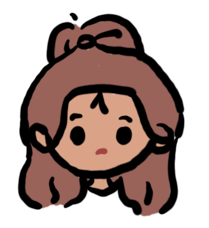

Lewis
Country: Russia

I am so glad that I insisted on taking the path of studying in the United States when I first came here, so that I could discover the many more possibilities that exist in this world. After coming to the U.S., I have met different people from all over the world and listened to their stories about their lives. They told me about their lives and how the differences between cultures are really big, and how they don't have to worry about wars, don't have to be anxious about not being able to eat, and how they value their lives more. I saw a lot of beautiful scenery, the world is too beautiful to live a more meaningful life.
Ensia
Country: China

Our first birth occurs when we are born into a particular culture, shaping our established ways of seeing the world. Studying abroad, on the other hand, is like our second birth, occurring when we leave the familiarity of our home country and set foot in an unfamiliar foreign land. This is when we find that all common sense is broken and new languages, habits and cultural logics are being formed. It is as if we become a new person, adopted. As we look back and recount our birthplace with this new perspective and language, it is a stage that every anthropologist should go through.
Angela
Country: China

"The point of studying abroad and being a international student is not what you learn or what you understand, but what you experience."
Vedanti
Country: New Zealand

After studying abroad and living in the United States for two years, I began to accept my imperfections openly, and no one is absolutely perfect. When I go abroad, I will meet more people who are better than me, and talking with them can always help me learn a lot of things. I don't feel anxious, on the contrary, I have become more open.